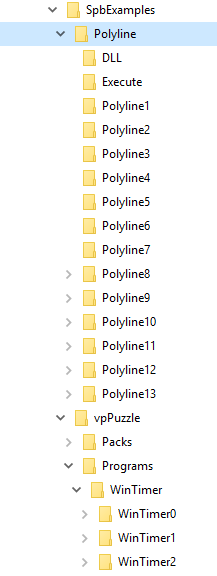

Copyright (c) Prolog Developemnt Center SPb
PdcVipSolutions
Version 2.0
The
PdcVipSolutions v.2.0 - является набором инструментов (в качестве дополнения к официальному продукту PDC
Visual Prolog), примеров (учебных и демонстрационных), а также проектов для построения полезных приложений.
The current version 2.0 is build by Vip version 9x (in fact 9006).
Hole the content is placed at https://github.com/PdcVipSolutions
All content must be placed to directories with names
SpbRSolutions (the root directory may have any other name)
SpbVipTools (the dicrectory is created by download)
SpbExamples (the dicrectory is created by download)
SpbProjects (the dicrectory must be created manually)
SpbRSolutions (the root directory may have any other name)
The main purpose of version 2.0 is the demonstration of the WorkSpace Manager Tool.
SpbVipTools
SpbVipTools is the set of packages to support project and
examples and to demonstrate how the WorkSpace Manager works.
To get SPB VipTools you must download it as one bunch from https://github.com/PdcVipSolutions/SpbVipTools
SpbExamples

(download as one bunch from https://github.com/PdcVipSolutions/SpbExamples)
SpbProjects
which contains separatly downloadable projects:
WorkSpace Manager (download from https://github.com/PdcVipSolutions/WS_Manager)
DelFiles (download from https://github.com/PdcVipSolutions/DelFiles)
The version 2.0 contains the executables and source codes of applications.
The executables of applications are placed at SpbRSolutions/SpbVipTools/Bin.
The documentation for the WorksSpace Manager placed at SpbRSolutions/Bin/wsmAppData, where you can find
ReadMe(En/Ru).pdf - the instruction how to build and run applications
WorkSpaceManager(En/Ru).pdf - the general Info regarding the tool
wsm_help(En/Ru).chm - the standard MS Help, which also may be called from the WorkSpaceManager.exe application.
WorkSpaceManager also
is represented as the integration of http-based backend and http-based
frontend. This is the first step toward the applications based on the
microservice ideas.
It has NO mullty-user functionality supported.
It has NO reaction on the not started backend.
The main purp[ose was to get the list of tasks to be solved in the future.
The examples, which are included to the versionj 2.0, was built many years ago. They are updated just to feet the VIP9x status.